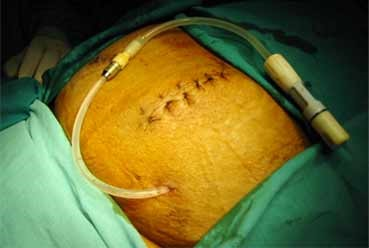
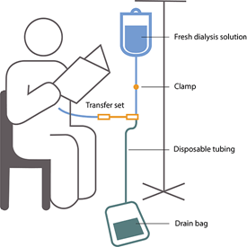

CKD ( CHRONIC KIDNEY FAILURE)
Some patients go into a status of chronic Renal insufficiency or failing kidneys due to certain illnesses such as Diabetes mellitus increased blood sugar), Hypertension (uncontrolled blood pressure) and certain genetically based chronic illness affecting the blood vessels of the kidneys.
TREATMENT FOR CKD:
These patients will have slow steadily declining kidney function resulting in accumulation of those waste products such as urea creatinine etc, which are normally excreted by the kidneys. Poor output of water and disturbance of the electrolytes such as Sodium, Potassium etc can lead to life threatening conditions in the course of the illness. Such patients will require removal of the waste toxic products and excess of water from the body by dialysis. This can be done either from the blood by passing the blood through the Haemodialysis machine. With haemodialysis method, the waste products, excess water etc. can be removed comparatively faster. For this procedure patient has to come to the dialysis centre and usually can be done as an outpatient procedure. Occasionally, if the patients condition is critical, patient will need admission in the hospital some times even in to the ICU.
CAPD
If and when the patients condition is stable but requires removal of excess urea creatinine, another but comparatively slower method of removing these waste products, is available. This procedure is known as Continuous Ambulatory Peritoneal dialysis.
By this method, patient can avoid coming to the hospital. The same purpose of removing the waste products can be achieved through a membrane known as Peritoneum covering the inside layer of the abdominal wall (tommy) and covering the outside of the intestines, For this, a small cannula (tube) is placed inside the abdomen in to the peritoneal cavity by surgically opening the abdomen. Through this tube specially prepared fluid (Peritoneal Dialysis fluid) is let inside the abdomen, retained in side the abdomen for specific periods and then let out. During the period of retention of the fluid inside the abdomen an exchange of waste and toxic products diffuse out in to the retained fluid and then out of the body when the retained fluid is let out.
This method known as CAPD can be done at home itself after the patient and his/her attenders are trained sufficiently enough. Quite often, many patients on long term haemodialysis programme, opt out of haemodialysis and switch over to CAPD. The surgical procedure for placement of the cannula and the training for the exchange of fluid etc are done at SB Hospital. On specific request by the patient or their relatives it may be possible to send specially trained personnel for short periods to train the patient and a devoted attender to this procedure at home.
CAPD Catheter

CAPD Line Diagram
